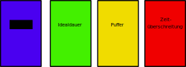

Eine Stunde kann aus folgenden Bestandteilen bestehen (dies ist nur ein Beispiel):
Einführungsphase/Eröffnungsphase (5 min):
Anknüpfungspunkte an die letzte Stunde
Hausaufgaben prüfen
Stundenprotokolle einsammeln
o.ä.
Präsentationsphase (5 min)
Übungsphase (15 min)
Anwendungsphase/Transferphase (15 min)
Schlussphase/Ausgangsphase (5 min):
Zusammenfassen der Ergebnisse
Erklären der Hausaufgaben
Transfers
Ausblick auf die nächste Stunde
o.ä.
Die gewählte Zeitdauer muss eine ganze Zahl sein und sollte die maximal längste Zeit für das Element sein.
Die bereits vergangene Zeit wird farblich unterstrichen. Nicht vergessen Zeiten für Umbauten und Organisation einzuplanen!!
